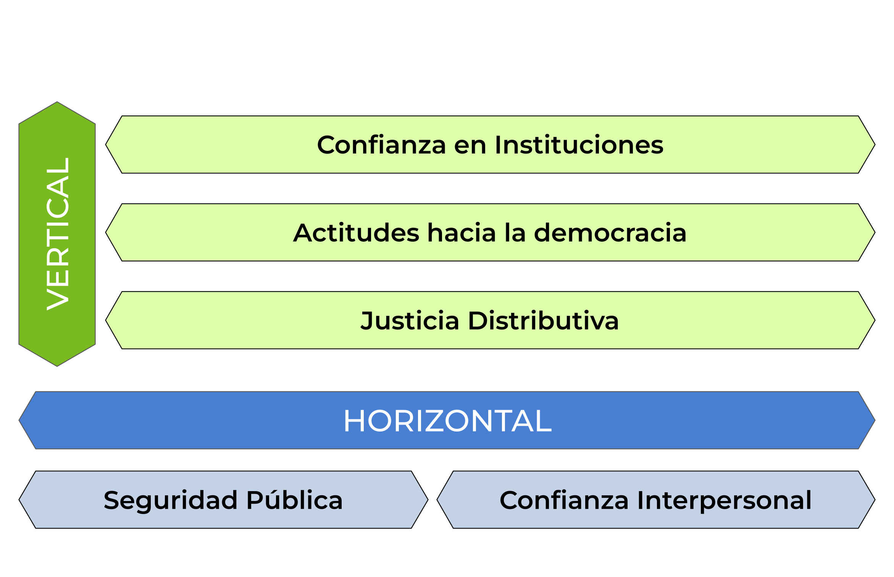

Surge el año 2020 con el objetivo de contribuir al análisis de la cohesión social en Chile y América latina
Se basa en la experiencia de proyectos internacionales de conceptualización y medición de cohesión social
Cohesión social
“Social cohesion is a state of affairs concerning both the vertical and the horizontal interactions among members of society as characterized by a set of attitudes and norms that includes trust, a sense of belonging and the willingness to participate and help, as well as their behavioural manifestations”. (Chan et al., 2006, p. 290).
Chan, J., To, H.-P., & Chan, E. (2006). Reconsidering Social Cohesion: Developing a Definition and Analytical Framework for Empirical Research. Social Indicators Research, 75(2), 273–302.
Antecedentes
La cohesión social ha cobrado una creciente relevancia debido a la inestabilidad política, la desigualdad persistente y los conflictos sociales que han caracterizado a los últimos años (Salazar-xirinachs, 2023).
En Latinoamérica, se han concentrado los esfuerzos en estudiar la cohesión social desde su dimensión institucional orientada a las políticas públicas (CEPAL).
No obstante, también existe una vertiente enfocada en la operacionalización de la cohesión social para medir y comprender empíricamente este concepto (Ecosocial; OCS).
Factores asociados
A nivel individual, el aumento de la cobertura educativa ha impactado positivamente en las expectativas sobre la movilidad social que tienen las personas.
Ahora bien, la literatura indica que, elementos estructurales tales como el desarrollo económico y la presencia de instituciones sólidas y eficaces, pueden determinar la calidad del vínculo social en un país.
Además, posterior a las olas migratorias de los últimos años, en el país se ha evidenciado un deterioramiento de las relaciones entre migrantes y no-migrantes.
Hipótesis
\(H_{1}\): Los países con un mayor desarrollo económico presentarán mayores niveles de cohesión social
\(H_{2}\): Países con mayores niveles de desigualdad presentarán menores niveles de cohesión social
\(H_{3}\): Individuos con mayor nivel educativo mostrarán mayores nivel de cohesión social
\(H_{4}\): Países con mayores niveles de gobernanza presentarán mayores niveles de cohesión social
\(H_{5}\): Aumentos en la proporción de población migrante en un país estarán asociados a disminuciones en los niveles de cohesión social
La encuesta tiene por objetivo recolectar datos la opinión pública sobre democracia y gobernanza en el continente americano, aplicándose de manera regular desde 2004.
Esta investigación contiene un N = 238.257 individuos dentro de 25 países considerando desde 2004 hasta 2023.
Variables dependientes: índice de cohesión vertical e índice de cohesión horizontal.
Variables independientes individuales: nivel educativo.
Variables independientes contextuales: PIB per cápita, Índice Gini, Índice de Gobernanza, Diversidad cultural.
Marco de medición

Método
Para validar el modelo construido, se aplica un análisis factorial confirmatorio.
Posteriormente, gracias a estructura jerárquica de los datos, se estiman modelos de regresión multinivel híbridos.